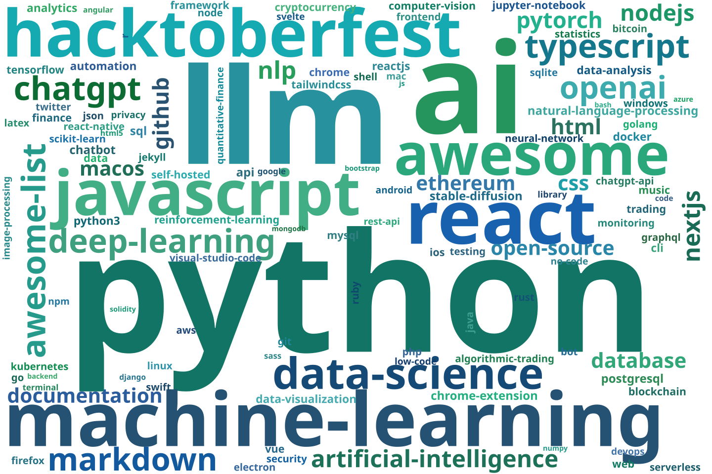
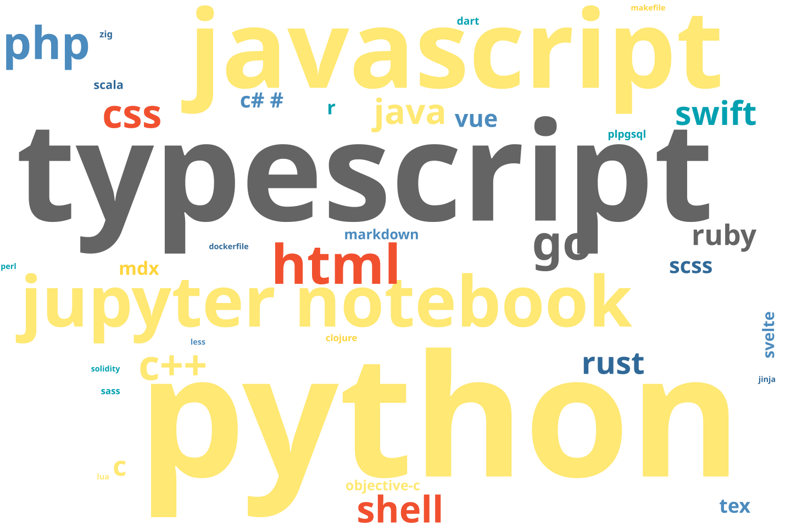
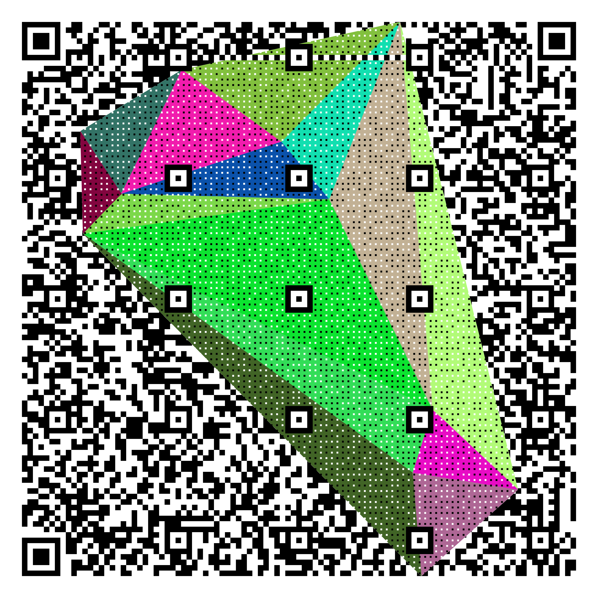
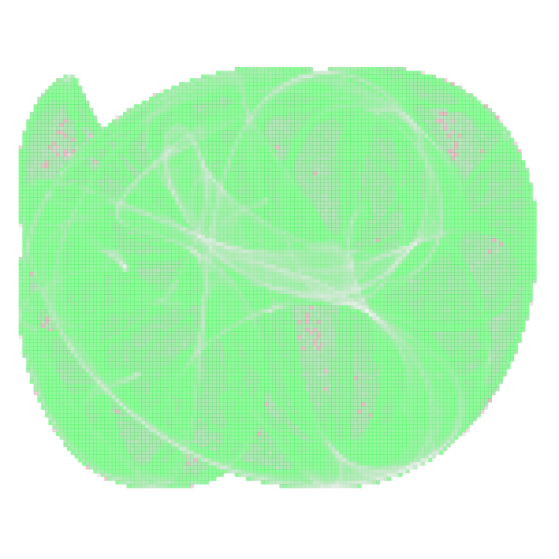
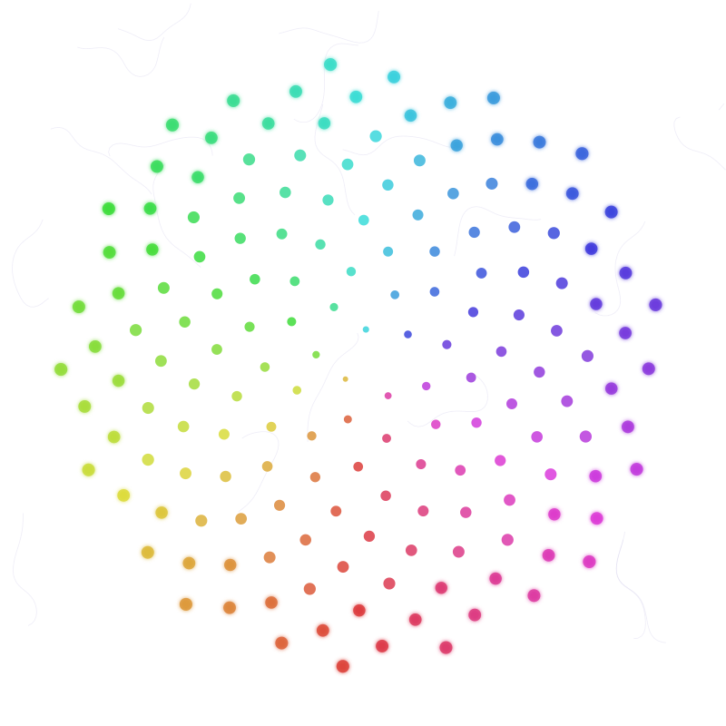

name: Wyatt Walsh
location: California
interests:
- building developer tools
- generative art & creative coding
- machine learning & optimization
- open source everything
currently:
building: developer tools & AI applications
learning: always something new
fun_fact: "this profile's artwork literally changes when you star it"
[!TIP] Star this repo to reshape the generative artwork below — every interaction produces a unique Clifford attractor pattern.



Watch this profile's journey unfold — from the first commit to today, in 30 seconds.
|
 Cosmic Genesis — Clifford attractor revealing as stars and forks accumulate over time |
 Unfurling Spiral — each dot appears at its repo's creation date, flow field emerges with contributions |

Every star, fork, and watch reshapes these artworks. They are deterministic — same data produces the same pattern — but sensitive: one new interaction creates an entirely different image.
|
 Community Art — Clifford strange attractor seeded by your stars, forks, and watches |
 Activity Art — Golden-angle phyllotaxis spiral, one dot per repo |
$x_{n+1} = \sin(ay_n) + c\cos(ax_n)$ · $y_{n+1} = \sin(bx_n) + d\cos(by_n)$ · deterministic chaos, seeded by real data